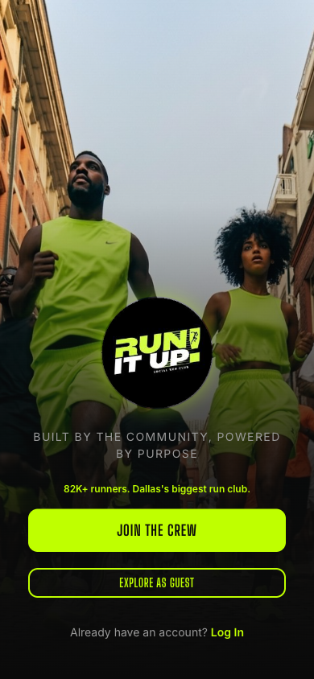
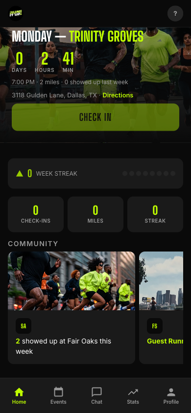
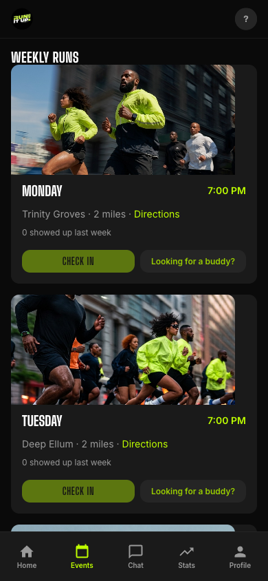
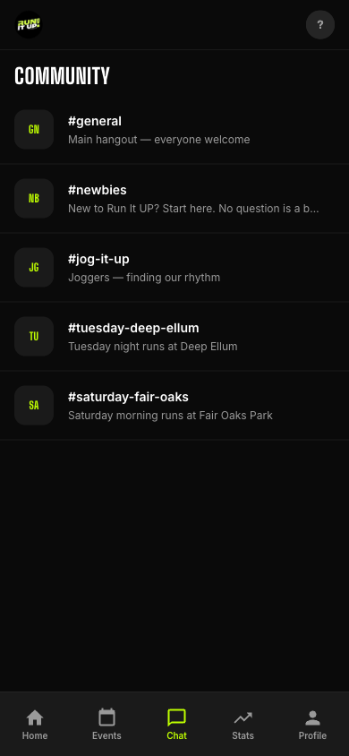
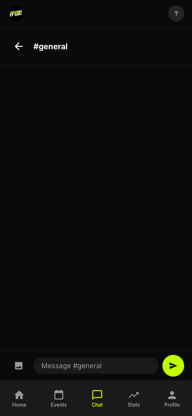
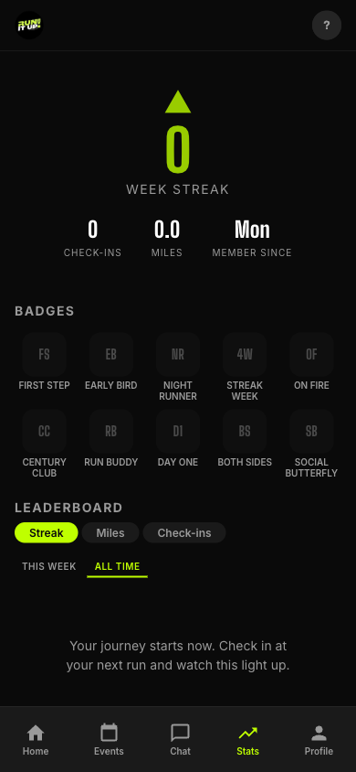

I built Run It UP! a complete community experience system. Here's what it does.
Built by Taylormade Creative
For RSVPs. Takes a cut. Buries your brand under theirs.
For schedules. Nobody checks it. Just dates on a screen.
For updates. 20% open rate if you're lucky. One-way street.
For links. A parking lot page. Doesn't look like you at all.
For check-ins. Collects emails but can't tell you who's actually consistent, who's new, or who stopped showing up.
5 tools. None of them talk to each other.
82K followers and no home base.
Run It UP! has the community. What it doesn't have is the infrastructure.
This is a complete system — check-in, community, events, stats, networking, and growth — all in one place, all under your brand. No more duct-taping five apps together. You own everything. And every run has a share button — your members invite friends straight from the app.






The #1 reason new runners don't come back?
They have nobody to run with.
Run Buddy pairs new people with someone who already knows the route and the vibe. Tap "Looking for a buddy?" and you're linked up before you even get there.
Show up once as a stranger. Come back as crew.
The app + App Store and Google Play launch. Check-in, chat, events, stats, run buddy — live and ready.
Push notifications, DMs, and Strava sync
Multi-city expansion — Houston, Atlanta, Chicago. The RIU network.
Vendor and sponsor partnerships — local businesses pay to reach your runners
Spotify and Apple Music integration — curated playlists for every run
82,000 followers is a following.
This system turns it into something you own, operate, and grow.
Taylormade Creative — DFW